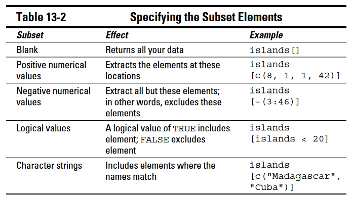

Chapter 5 Basic blocks
5.1 Subsets
Nguồn (de Vries and Meys 2015, 241)
str(islands)## Named num [1:48] 11506 5500 16988 2968 16 ...
## - attr(*, "names")= chr [1:48] "Africa" "Antarctica" "Asia" "Australia" ...islands## Africa Antarctica Asia Australia Axel Heiberg Baffin Banks
## 11506 5500 16988 2968 16 184 23
## Borneo Britain Celebes Celon Cuba Devon Ellesmere
## 280 84 73 25 43 21 82
## Europe Greenland Hainan Hispaniola Hokkaido Honshu Iceland
## 3745 840 13 30 30 89 40
## Ireland Java Kyushu Luzon Madagascar Melville Mindanao
## 33 49 14 42 227 16 36
## Moluccas New Britain New Guinea New Zealand (N) New Zealand (S) Newfoundland North America
## 29 15 306 44 58 43 9390
## Novaya Zemlya Prince of Wales Sakhalin South America Southampton Spitsbergen Sumatra
## 32 13 29 6795 16 15 183
## Taiwan Tasmania Tierra del Fuego Timor Vancouver Victoria
## 14 26 19 13 12 82

Subset elements
References
Vries, Andrie de, and Joris Meys. 2015. R For Dummies. 2nd ed.